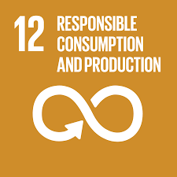

Home | SDG 12 | SDG Challenges | SDG Actions | Tech for SDG | My SDG Impact | About me | Coder Series |
The technology of SDG 12
The technology about SDG 12 global warming
The technology of SDG 12 global warming is that the rising temperature of the earth is primarily blamed by scientists on man-made emissions. (that was a fact about technology global warming) So the technology of global warming is this information. So the temperature is rising really high on the earth primarily and scientists were blamed for it. Also people need to stop wasting gas like don't use cars that often because it prevents a lot of gas. That is also like wasting the global warming. that's why people need to stop using gas that not only it is spoiling global warming it is also wasting a lot of money. So what prevents a lot of gas please do not use it that much because that is destroying the meaning of global warming. Which also means that some people are not following some of the parts of the goal.
Coder Series Website